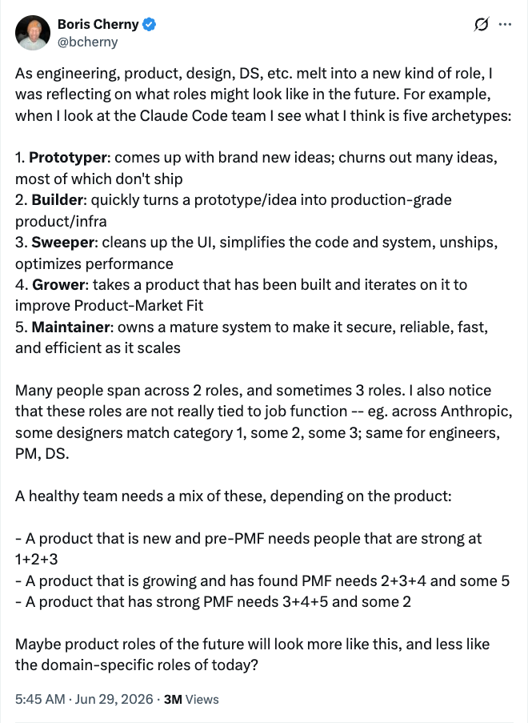
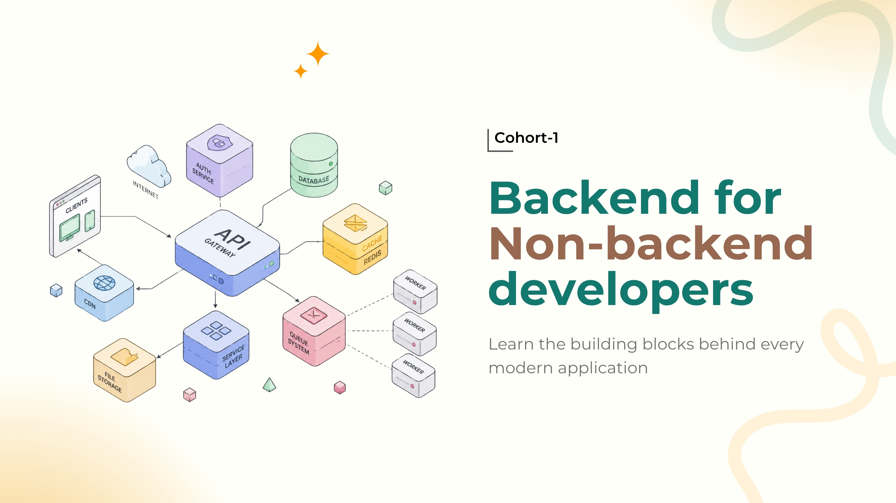
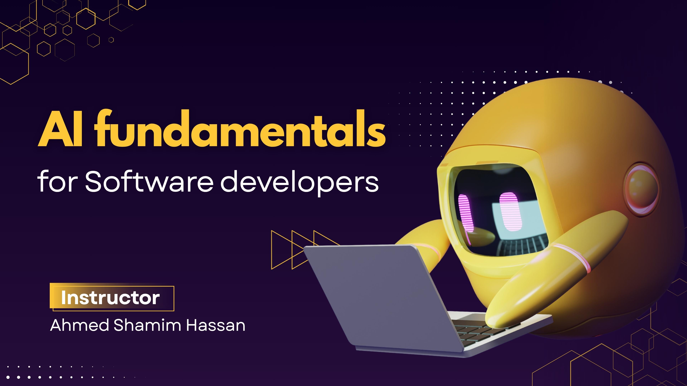
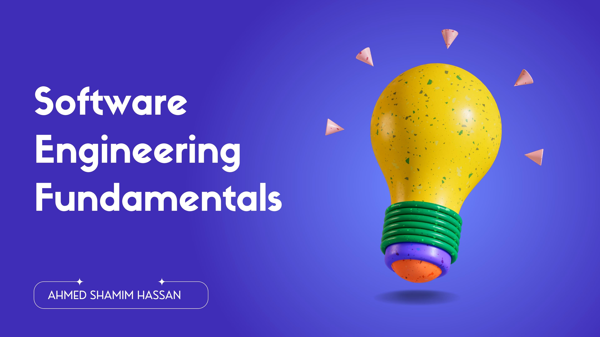

Ten years building software that scales — at Kahf, MailerLite, Pathao, and teams at home and abroad. Along the way, taught thousands of developers through courses and workshops, and wrote a bestselling Bangla book on software engineering.
What's changing, what's dying, and what still matters.
And it's reshaping who builds what, what skills matter, and where the real value lives.
The question was never if you'll adapt.
It's how fast.
One title. One person. You wrote the UI, the logic, the database, and carried the tape to the machine.
The web got heavy. Each layer grew deep enough to need a full-time owner — so the role split.
Agents write most of the code. The scarce skill is judgment across the whole slice — so breadth pays again.
Depth didn't win. Then breadth didn't. The pendulum moves with whatever the bottleneck is.
Roles won't collapse into one and stay there. They'll split again — just along different lines. Not by layer of the stack, but by what stage of the work you're best at.
One person did everything, because the systems were small enough to hold in one head.
Systems outgrew us, so we split by layer — front-end, back-end, ops, data.
Agents absorb the layers. What's left to divide is taste, judgment, and stage of work.
From the team building Claude Code. Notice what's missing: not one of these is named after a layer of the stack.
Boris Cherny · @bcherny · Jun 29, 2026

Click the image to read the original tweet
For twenty years we worshipped the maker — the coder, the writer, the designer.
Now? Creating is a commodity. Like tap water. Turn the faucet, content pours out.
Everyone can build software now. What took a team of engineers months takes a single afternoon. Building isn't the moat anymore — it's the baseline.
The internet is flooding with “Grey Slop” — content that's technically proficient but spiritually vacant. When everyone can create, the output collapses. Value moves elsewhere.
Hand someone the exact same ingredients, the same spices, the same recipe a top chef uses.
Why not?
The ingredients were never the secret. The same is true for software — the tools are available to everyone. What separates great engineers is everything else.
Frameworks, tools, copilots — all democratized. What makes you valuable isn't access to the tools. It's what you bring on top.
HTTP, databases, caching, concurrency. AI generates code — it doesn't replace understanding what happens underneath.
AI can write the code. It can't decide if the architecture is right, or if the trade-offs make sense. That's still you.
Not just your function — the user experience, the performance, the whole product. End to end, no hand-offs.
Knowing what good code, architecture, and UX look like — and demanding it.
Choosing the right tool, pattern, or trade-off — when there's no obvious answer.
Seeing how the pieces connect — front-end, back-end, infrastructure, users.
Caring about the outcome end-to-end — not just your layer of the stack.
Why understanding systems is the skill that separates makers from engineers.
For decades, the ability to write code was the scarce, valuable skill that set developers apart. AI changed that. It writes faster, cleaner, and more consistently than we ever will. With AI, anyone can produce code now.
Still learn to code — just don't build your career on it alone.
If coding isn't the moat anymore — what makes you valuable?
It's about three things:
None of that comes from a prompt. It comes from understanding how systems work.
You don’t just start coding. You ask:
That’s systems thinking — the difference between something that works and something that lasts.
Request/response flow, HTTP verbs and status codes, cookies, sessions, state.
HTTP vs HTTPS and TLS, DNS resolution, SMTP and how email actually gets delivered.
Authentication vs authorization, tokens and sessions, the security basics you can't skip.
REST design, monoliths and where they break, contracts between client and server.
Relational vs NoSQL, modeling, queries, indexes — where your data actually lives.
What to cache and where, TTLs, invalidation — the cheapest performance you'll ever buy.
Server-sent events and WebSockets — when the server needs to talk first.
Background jobs, retries, doing slow work off the request path.
CI/CD, logging, error tracking, performance monitoring — knowing it broke before users tell you.
The community-driven backend roadmap. Free, comprehensive, and visual — covers everything from internet basics to advanced architecture.
roadmap.sh/backend → Opinionated GuideA detailed, opinionated backend developer roadmap with explanations, resources, and a clear learning path from zero to hireable.
alexhyett.com →These roadmaps are one Google search away.
Let’s hear from you
Pick one roadmap and cut it into eight weeks. Two topics a week, and one small thing you actually build with each. Put it in your calendar like a meeting you can’t move.
Pair with one friend, or pull three or four colleagues into a group. Same plan, same week, a standing check-in. You show up because someone notices when you don’t.
A plan kills the drift. A partner kills the excuse. That’s two of the four reasons gone.
I’m running a live cohort for two months. Same fundamentals we just walked through — but with someone to unblock you, a group moving at your pace, and deadlines you can’t quietly skip.

Enrol at megamindslearning.netEach topic gets a dedicated follow-up session. You come back with your confusion, we clear it before moving on.
Not toy exercises. You ship something real through the ten weeks, with my guidance and review along the way.
AI-assisted development and AI engineering guidelines — how to actually work alongside agents once the fundamentals are yours.
A dedicated channel for the cohort — ask between classes, and I drop useful resources there regularly.
Every cohort participant gets these from Megaminds Learning — included, not upsold.


JavaScript, PHP, Python, Java, Go, C#, Dart — it genuinely doesn’t matter which. If you can read and write code in one of them, you’re ready.
No syntax lessons, no framework tutorials. Every concept here is language-agnostic — you’ll apply it in whatever stack you already work in.
The fundamentals sit underneath every language. That’s exactly why they’re worth your two months.
The cohort sells at ৳10,000, and early bird is open at ৳7,000. But you sat through this hour with me — so there’s a code below that only this room gets.
Valid until 26 July, 11:59 PM
Apply it at checkoutAnything from today — the fundamentals, the roadmap, the cohort, or where to start on Monday morning.
Thank you for spending the hour with me.